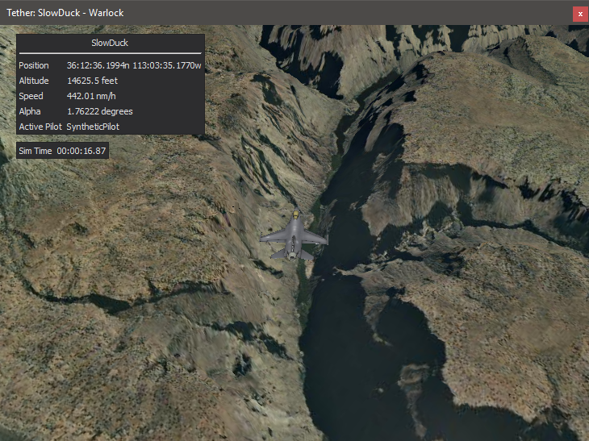
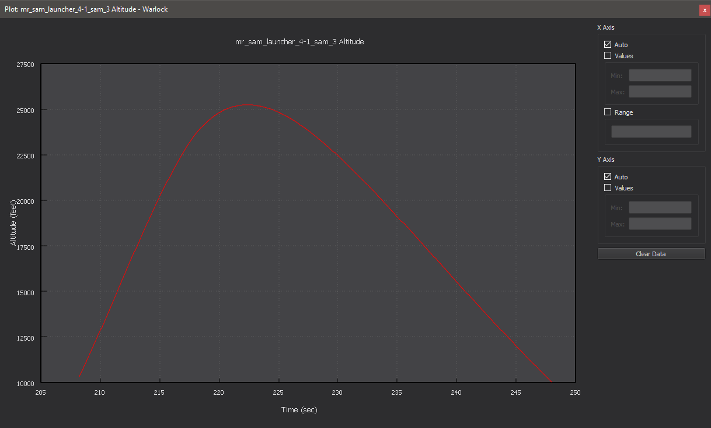
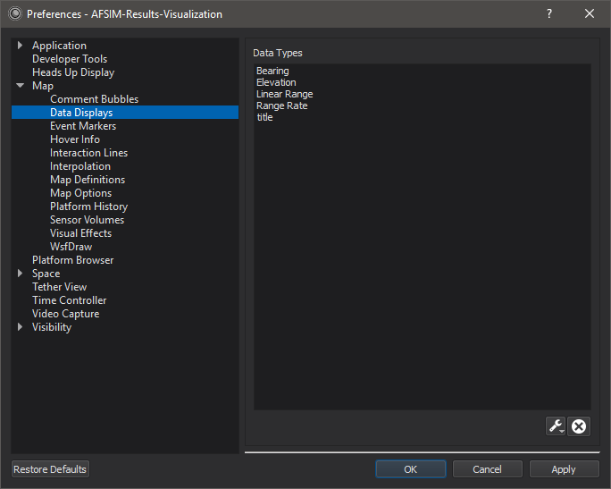

Platform Details - Warlock¶

The Platform Details dialog displays data for the selected platform.
Items in the platform details can be hidden by right clicking on the item and selecting the option to hide. All hidden items may be made visible by right-clicking in the platform details and selecting “Show all items.”
Plug-ins may add data to the platform details.
P6DOF Data - Adds P6DOF data.
SixDof Data - Adds SixDof data.
Orbital Data - Adds orbital elements for space movers.
Tracks - Adds track data.
Plotting¶

Right clicking on a numerical value provides an option to plot that data over time for the selected platform.
The plot has a context menu with the following options:
Option |
Description |
|---|---|
Plot View |
This option only appears when in the Data View, and it will switch the display back to the Plot View. |
Data View |
This option only appears when in the Plot View, and it will show the Data View which shows the values for all points displayed on the plot |
Export Data |
Allows the user to export the data in csv format to a file |
Show Legend |
Toggles the legend on the plot |
Full Screen |
Displays the plot in full screen mode |
Data Rings¶

Right clicking on a numerical value also provides an option to create or remove a data ring for the selected platform. When adding a ring, the user will be presented with a dialog in which they can specifiy a desired minimum and maximum value for the ring. A platform can have any number of data rings, but only one ring per data item.
Data Displays¶
Most items in the platform details dialog may be dragged onto the map or tether views to create a data overlay. The overlays may be dragged around or closed using the close button which appears after hovering over the overlay.
Note
The preferences above will populate when the user edits the font size or color of the overlay.